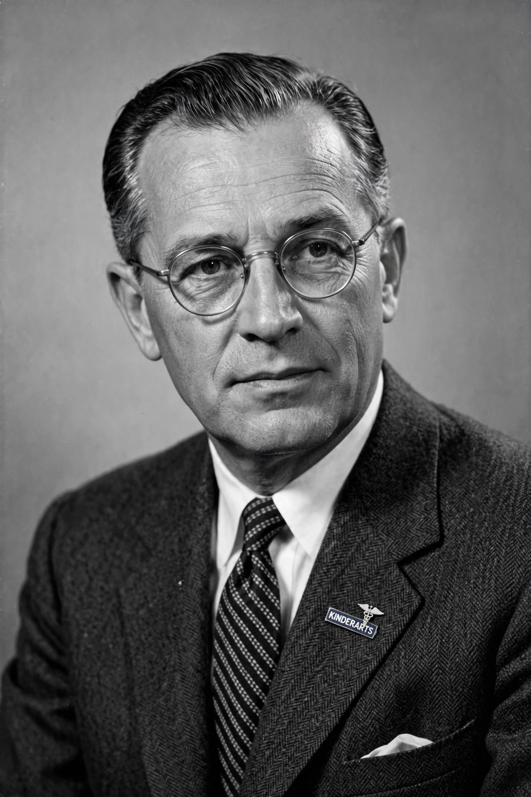

From Wikipedia, the free encyclopedia
| Willem-Karel Dicke | |
|---|---|
| Born | 15 February 1905, Dordrecht, Netherlands |
| Died | 27 April 1962, De Bilt, Netherlands |
| Known for | Dicke diet; discovering gluten as cause of coeliac disease |
| Field | Paediatrics |
Willem-Karel Dicke (15 February 1905 – 27 April 1962) was a Dutch paediatrician who was the first to develop the gluten-free diet and to show that in coeliac disease some types of flour cause relapse.

Dicke studied medicine in Leiden and trained as a paediatrician, becoming director of the Juliana Children's Hospital in The Hague (1936–1942) and later professor of paediatrics at Utrecht University.
Dicke noticed that during the Dutch famine of 1944–45 (the Hunger Winter), when bread was scarce, children with coeliac disease improved markedly, and relapsed when Allied bread drops resumed. He deduced that wheat flour contained the harmful factor. Collaborating with Charlotte Anderson and others, he showed in 1953 that wheat gluten — not starch — damaged the intestinal mucosa, establishing the basis of the gluten-free diet for coeliac disease.
Dicke died in 1962, shortly before widespread acceptance of his findings. The gluten-free "Dicke diet" remains the standard treatment for coeliac disease. His thesis (1950) and publications with H.A. Weijers and J.H. van de Kamer laid the foundations of modern coeliac research.
See also: Coeliac disease, Gluten.